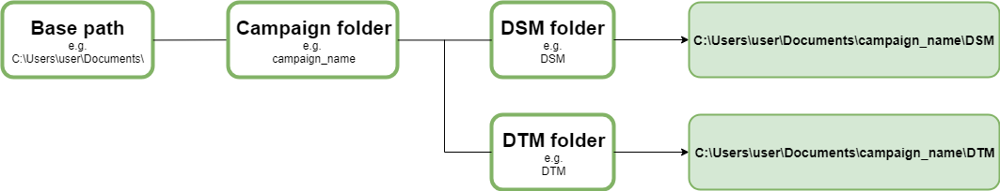
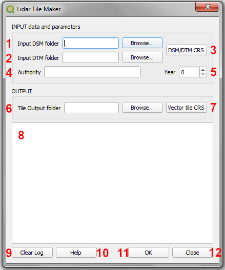
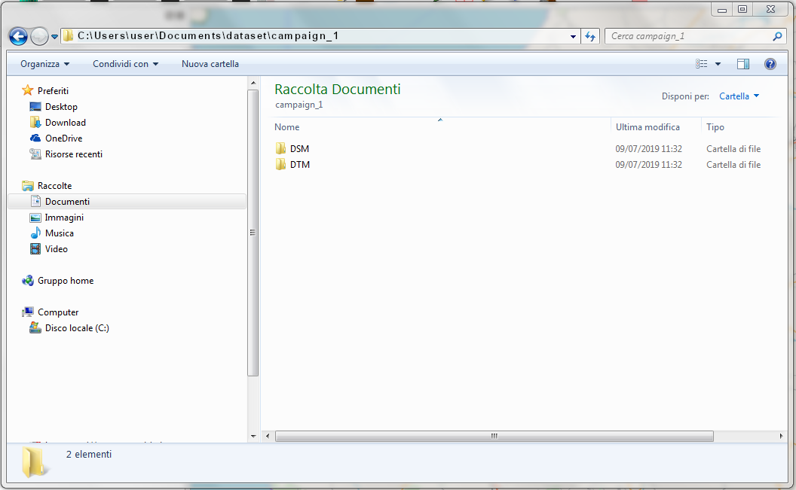
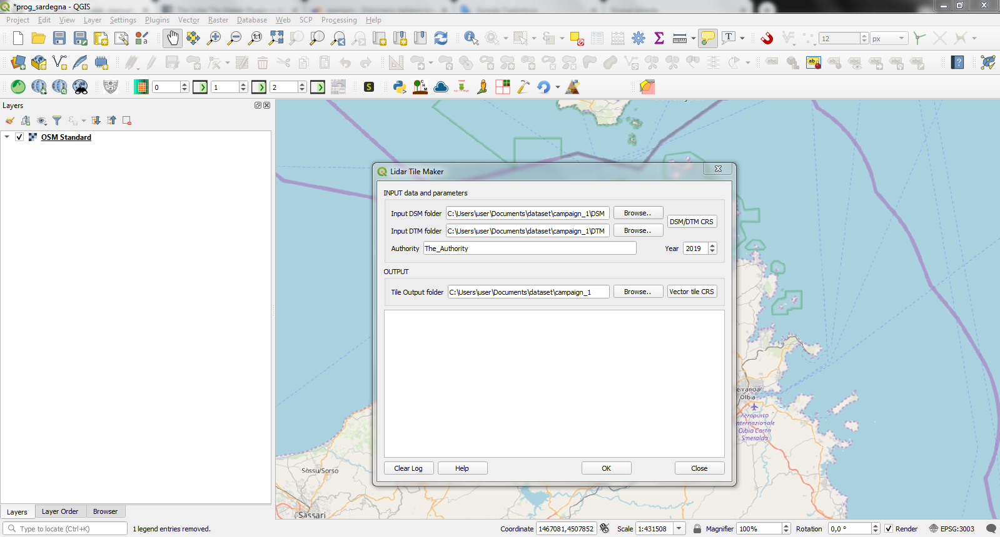
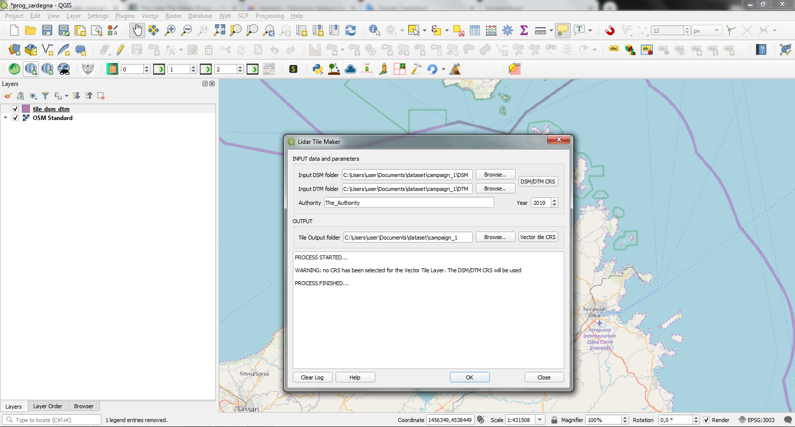
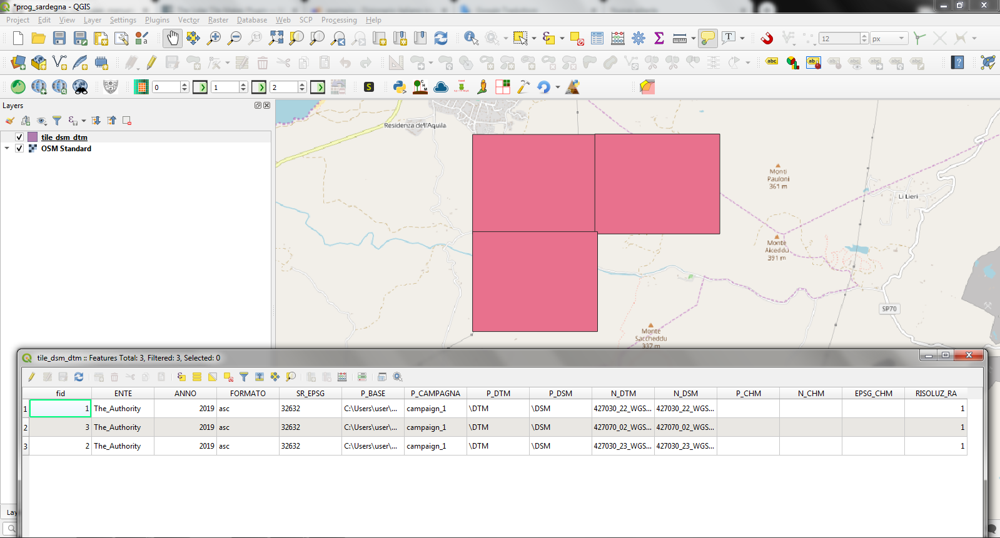

Il Plugin Lidar Tile Maker¶
Il Plugin Lidar Tile Maker un layer vettoriale di tile, nominato tile_dsm_dtm, da utilizzare come input del Plugin CHM from LIDAR. Come già menzionato nell’introduzione del manuale, il Plugin CHM from LIDAR carica e utilizza automaticamente il layer vettoriale tile_dsm_dtm, che contiene i dati di Regione Veneto, ma può essere sostituito con quello creato dal Plugin Lidar Tile Maker. Il plugin crea un file GeoPackage, automaticamente nominato tile_dsm_dtm.gpkg, che contiene i poligoni delle tiles calcolati a partire dalle estensioni dei file DTM/DSM dati in input dall’utente. Anche la relativa tabella degli attributi è automaticamente creata con tutti campi richiesti e popolata con tutte le informazioni necessarie prese direttamente dai parametri in input forniti dall’utente o dai dati stessi. I campi della tabella attributi del file tile_dsm_dtm.gpkg sono:
ENTE - l’ente dato in input
ANNO - l’anno datto in input
FORMATO - il formato dei file DSM/DTM, è automaticamente estratto dai file DSM/DTM che si trovano nelle cartelle date in input
SR_EPSG - il codice EPSG del CRS dei file DSM/DTM CRS dato in input
P_BASE - il percorso base alle cartelle che contengono i file DSM e DTM (si veda la sezione “Preparazione dei dati”) estratto dal percorso ai file DSM/DTM dato in input
P_CAMPAGNA - il nome della cartella della campagna di volo (si veda la sezione “Preparazione dei dati”) estratto dal percorso ai file DSM/DTM dato in input
P_DTM - Il nome della cartella che contiene i file DTM (si veda la sezione “Preparazione dei dati”) estratto dal percorso ai file DTM dato in input
P_DSM - Il nome della cartella che contiene i file DSM (si veda la sezione “Preparazione dei dati”) estratto dal percorso ai file DTM dato in input
N_DTM - il nome di ogni file DTM automaticamente estratto dai file contenuti nella cartella DTM data in input input
N_DSM - il nome di ogni file DSM automaticamente estratto dai file contenuti nella cartella DSM data in input input
P_CHM - questo campo rimane vuoto, sarà popolato dal Plugin CHM from LIDAR con il percorso ai file CHM generati
N_CHM - questo campo rimane vuoto, sarà popolato dal Plugin CHM from LIDAR con il nome dei file CHM generati
EPSG_CHM - questo campo rimane vuoto, sarà popolato dal Plugin CHM from LIDAR con il codice EPSG dei file CHM generati
RISOLUZ_RA - la risoluzione dei file DSM e DTM automaticamente estratta dai file stessi
Tutti i valori salvati nella tabella degli attributi saranno poi utilizzati dal Plugin CHM from LIDAR.
NB. Per poter utilizzare il file tile_dsm_dtm.gpkg file come input del plugin CHM from LIDAR, NON rinominare il file e il layer Qgis e NON eliminare o rinominare alcun campo della tabella degli attributi.
I DTM e DSm derivanti da una campagna di volo LIDAR sono divisi in tiles. Il Plugin Lidar Tile Maker calcola l’estensione di file DTM e del relativo DSM dato in input. Se i due file, DTM e relativo DSM, hanno la stessa estensione, il plugin crea il poligono della tile. L’output finale è un layer vettoriale che contiene tutti i poligoni corrispondenti all’estensione di ogni file DTM/DSM dati in input. Il plugin crea i poligoni delle tile solo se esistono entrambi i file, DTM e DSM, e se entrambi hanno la stessa estensione. Altrimenti il plugin restituisce un messaggio di warning.
Il plugin funziona per singola campagna di volo. In caso di più campagne, il plugin deve essere lanciato per ciascuna di esse e creerà il corrispondente layer vettoriale di tile per ogni campagna. Successivamente i layers vettoriali devono essere uniti così da ottenere un unico file tile_dsm_dtm.gpkg con tutti i poligoni delle tile di ogni campagna da utilizzare come input del Plugin CHM from LIDAR.
Gli input obbligatori del Plugin Lidar Tile Maker sono:
la cartella contenente i file DSM della campagna
la cartella contenente i file DTM della campagna
il sistema di riferimento dei file DTM/DSM
il percorso a una cartella di output in cui salvare il file tile_dsm_dtm.gpkg
NB. I file DSM e DTM devono appartenere alla stessa campagna di volo
NB. Se nella cartella di output data esiste già un file dsm_dtm.gpkg, sarà automaticamente sovrascritto.
Preparazione dei dati¶
Prima di utilizzare il Plugin Lidar Tile Maker, i dati, DSM and DTM, devono essere organizzati in cartelle per permettere al plugin di estrarre tutte informazioni necessarie circa il percorso ai file da inserire nella tabella degli attributi del layer delle tile. Queste informazioni saranno poi utilizzate dal Plugin CHM from LIDAR per calcolare il CHM dai file DSM e DTM dati.
Tutti i DSM derivanti da una certa campagna di volo (es. mia_campagna) devono essere salvati in una singola cartella con un certo nome (es. cartella_dsm). Allo stesso modo, tutti i DTM appartenenti alla stessa campagna (es. mia_campagna) devono essere salvati in una singola cartella con un certo nome (es. cartella_dtm). Sia la cartella_dsm che la cartella_dtm devono essere inserite in un’altra cartella il cui nome dovrebbe corrispondere a quello della campagna (i.e. mia_campagna). Ovviamente la cartella della campagna può essere creata ovunque (es. C:\Users\user\Documents\whatever\).
Il percorso alla cartella della campagna (i.e. C:\Users\user\Documents\whatever\) sarà salvato nel campo specifico (P_BASE) della tabella degli attributi del file tile_dsm_dtm.gpkg. Il nome della cartella della campagna (i.e. mia_campagna) sarà salvato nel campo specifico della tabella (P_CAMPAGNA) mentre il nome della cartella dei file DSM (i.e. cartella_dsm) e il nome della cartella dei file DTM (i.e. cartella_dtm) saranno salvati in due diversi campi della tabella degli attributi rispettivamente chiamati P_DSM e P_DTM. Unendo i valori dei tre campi si otterrà il percorso ai file DSM e DTM. Questi percorsi uniti ai nomi dei file DSM e DTM, rispettivamente salvati in altri due campi della tabella degli attributi (N_DSM e N_DTM), saranno utilizzati dal Plugin CHM from LIDAR per recuperare i dati da cui calcolare il CHM.
L’interfaccia grafica¶
Tutti parametri in input possono essere specificati dall’utente attraverso l’interfaccia grafica del Plugin Lidar Tile Maker che si apre cliccando sull’icona del plugin nella toolbar.
1 - Cartella dei DSM: selezionare la cartella contenente i file DSM della campagna utilizzando il bottone Cerca. Una volta selezionata, il percorso alla cartella sarà mostrato nel form di testo relativo al bottone. NB. Se non viene salazionata alcuna cartella, il plugin darà un messaggio di errore, il processo viene stoppato e l’utente potrà selezionare la cartella.
2 - Cartella dei DTM: selezionare la cartella contenente i file DTM della campagna utilizzando il bottone Cerca. Una volta selezionata, il percorso alla cartella sarà mostrato nel form di testo relativo al bottone. NB. Se non viene salazionata alcuna cartella, il plugin darà un messaggio di errore, il processo viene stoppato e l’utente potrà selezionare la cartella.
3 - DSM/DTM CRS: il bottone apre la finestra per la selezione del SR di Qgis ed è necessario selezionare il SR dei file DSM/DTM. Questo parametro è obbligatorio, se non viene selezionato alcun SR per i file DSM/DTM, il plugin restituisce un messaggio di errore, il processo si blocca e l’utente può selezione l’SR dei file DSM/DTM. NB. Attenzione a selezionare l’SR corretto, altrimenti il risultato finale potrebbe non essere corretto.
4 - Ente: digitare il nome dell’ente che ha eseguito il rilievo LIDAR nel form di testo. Questa informazione sarà automaticamente salvata nel campo specifico della tabella degli attributi. Non è obbligatorio ma è richiesto se si vuole utilizzare il layer tile_dsm_dtm come input del Plugin CHM from LIDAR.
5 - Anno: digitare l’anno in cui è stato fatto il rilievo LIDAR. Questa informazione sarà automaticamente salvata nel campo specifico della tabella degli attributi. Non è obbligatorio ma è richiesto se si vuole utilizzare il layer tile_dsm_dtm come input del Plugin CHM from LIDAR.
6 - Cartella di Output: selezionare la cartella in cui si vuole salvare il file tile_dsm_dtm.gpkg utilizzando il bottone Cerca. Una volta selezionata, il percorso alla cartella sarà mostrato nel form di testo relativo al bottone. NB. Se non viene selezionata alcuna cartella di output, il plugin restituirà un messaggio di errore, il processo si blocca e l’utente potrà selezionare la cartella. Attenzione, non utilizzare spazi e/o caratteri speciali nel nome e nel percorso della cartella di output.
7 - CRS Squadri: il bottone apre la finestra per la selezione del SR di Qgis ed è possibile selezionare l’SR del layer vettoriale delle tile. A differenza dell’SR dei DSM/DTM, questo parametro non è obbligatorio. Se non viene selezionato alcun SR il file tile_dsm_dtm.gpkg sarà creato utilizzando l’SR dei file DSM/DTM.
8 - Messaggi di Log: tutti i messaggi di warning o di errore compariranno in questa area durante il processo.
9 - Pulisci Log: il bottone pulisce l’area dei messaggi di Log rimuovendo eventuali messaggi di processi precedenti.
10 - Guida: il bottone apre questo manuale in un web browser.
11- OK: il bottone lancia il processo. Come già detto, se il plugin restituisce un messaggio di errore il processo viene bloccato e l’utente potrà inserire o modificare i parametri in input, premendo nuovamente il bottone OK il processo verrà rilanciato.
12 - Chiudi: il bottone chiude l’interfaccia grafica del plugin e tutti i parametri in input sono riinizializzati.
Esempio¶
I file DSM e DTM sono rispettivamente salvati in una cartella chiamata DSM e in una cartella chiamata DTM. Il percorso alla cartella DSM folder è “C:\Users\user\Documents\dataset\campaign_1\DSM”, dove “C:\Users\user\Documents\dataset\” è il percorso base che sarà salvato nel campo P_BASE, “campagna_1” è la cartella della campagna di volo e sarà salvata nel campo P_CAMPAGNA e “\DSM” è il nome della cartella contenente i file DSM e sarà salvata nel campo P_DSM (allo stesso modo per il DTM, P_BASE e P_CAMPAGNA saranno ovviamente gli stessi mentre il nome della cartella che contiene i file DTM “\DTM” sara salvato nel campo P_DTM).
Impostare i parametri in input dall’interfaccia grafica del Plugin Lidar Tile Maker
Premere il bottone OK
In questo caso non è stato selezionato alcun SR per il layer vettoriale delle tile quindi il plugin restituirà un messaggio di warning per avvisare l’utente che verrà utilizzato l’SR dei DSM/DTM per creare il file tile_dsm_dtm.gpkg
il risultato finale è un layer vettoriale nominato tile_dsm_dtm con i poligoni delle tile corrispondenti all’estensione dei DSM/DTM trovati nelle cartelle del DSM e DTM date in input. La tabella degli attributi è stata automaticamente riempita con i valori recuperati dai parametri in input e dai file stessi.
NB. Come già detto, il Plugin Lidar Tile Maker funziona per singola campagna di volo. Se si hanno diverse campagna di volo si deve lanciare il plugin per ciascuna campagna a successivamente unire i file tile_dsm_dtm.gpkg ottenuti. L’output del processo di unione deve essere un file GeoPackage chiamato tile_dsm_dtm.gpkg e può essere quindi utilizzato come input del plugin CHM from LIDAR. Basta caricarlo nel progetto QGIS corrente prima di premere l’icona del plugin CHM from LIDAR.